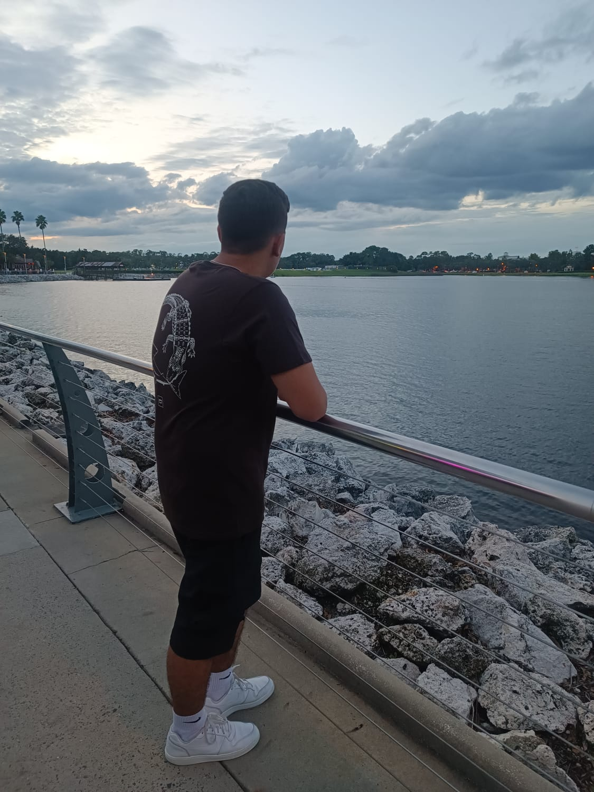

Olá! Meu nome é Gabriel Pujol Amaral Gurgel Velosa, tenho 17 anos e sou de São Paulo, Zona Sul, Brasil. Sou apaixonado por tecnologia e programação, e sempre estou em busca de aprender coisas novas e me aprimorar. Além do português, que é minha língua nativa, também falo inglês em nível avançado, o que me permite explorar uma vasta gama de conteúdos e oportunidades no mundo da tecnologia.
Meu interesse por programação vem crescendo ao longo dos anos, e cada novo projeto é uma chance de expandir meu conhecimento e desafiar minhas habilidades. Gosto de mergulhar em diferentes linguagens e ferramentas, pois acredito que o aprendizado contínuo é essencial para evoluir na área de desenvolvimento.
Seja bem-vindo(a) à minha página, e fique à vontade para explorar mais sobre mim e meu trabalho!